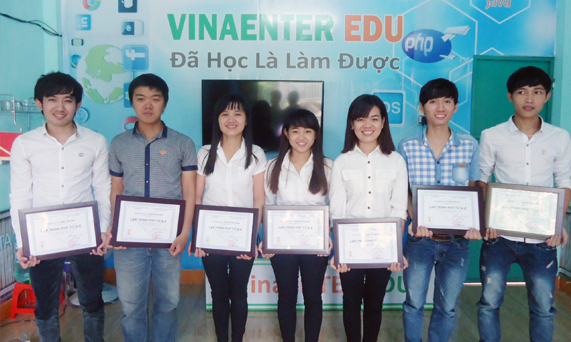

Chào mừng bạn đến với website cá nhân Trần Nguyễn Gia Huy
Trần Nguyễn Gia Huy sinh ngày 19/05/2000, được sinh ra trong một gia đình giàu truyền thống ngành CNTT. Cha tôi là một kỹ sư CNTT đầu ngành trong công ty, và có nhiều đóng góp tạo nên thương hiệu công ty...
Vài nét về Gia Huy
- Họ tên: Trần Nguyễn Gia Huy
- Địa chỉ: 154 Phạm Như Xương, Liên Chiểu, Đà Nẵng
- Email: giahuy@vinaenter.com - Phone: 0905.051.720
Khả năng của tôi
- Phát triển web Front-End
- Phát triển Web Back-End
- Kỹ năng làm việc nhóm và thuyết trình tốt
Kỹ năng chuyên ngành
- Html, Css, Javascript, Jquery
- PHP, MySQL, Ajax
- Javacore, Jsp-servlet, Swing, .NET
Mục tiêu của tôi
- Làm việc trong môi trường chuyên nghiệp
- Nâng cao kỹ năng chuyên môn với nhiều dự án khó
- Góp phần phát triển phòng công nghệ của công ty